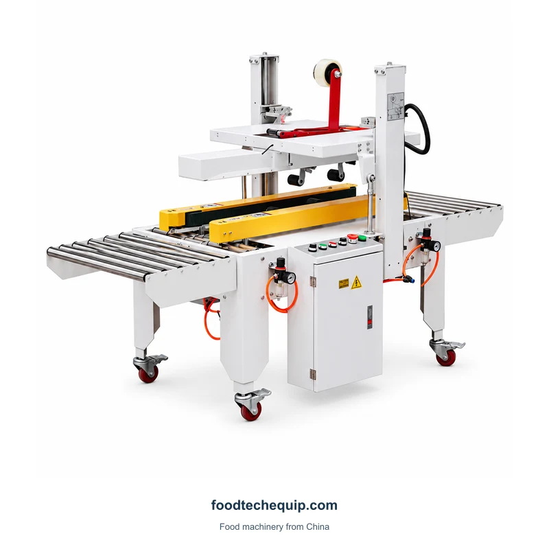

Precintado de cajas
Precintadora de cajas con cinta adhesiva
Equipos de sellado de cinta de cartón con transportadores de rodillos y conjuntos de manejo de cinta.
Ver equipoEl sellado con cinta de cartón se refiere al cierre de la caja y a la manipulación del paquete. Identifique las dimensiones de la caja, el patrón de la cinta y los requisitos de cambio de tamaño antes de seleccionar un diseño.
Equipos de sellado de cinta de cartón con transportadores de rodillos y conjuntos de manejo de cinta.
Ver equipo
Un sellador de bordes de cajas de cartón con soporte de rodillo, conjuntos de cinta y un marco con ruedas.
Ver equipo
Equipo de sellado de cinta de cartón con configuración de mesa de trabajo 5050.
Ver equipoPruebe con una palabra clave diferente o borre sus filtros.
Identifique si las cajas se ejecutan en lotes de tamaños repetidos o cambian de tamaño entre cajas consecutivas. Analice el arreglo de ajuste para esa secuencia.
Marque la cobertura de cinta requerida en un dibujo de caja. El cierre de la costura central y el sellado de los bordes necesitan diferentes patrones de cinta y disposiciones de manipulación.
| Área de selección | Qué comparar | Qué proporcionar |
|---|---|---|
| Secuencia de tamaños | Tamaños repetidos versus tamaños cambiantes | Lista de cajas y rango de tamaños |
| Patrón de cinta | Costura central versus bordes adicionales | Bosquejo de la cobertura de cinta requerida |
| Manejo | Preparación de solapas y transferencia de cartón | Especificación de la cinta y altura de trabajo |
El cierre de cinta, el flejado y la impresión de un código de despacho son operaciones diferentes. Proporcione un dibujo de la caja después de cada paso solicitado e identifique cómo se mueve entre estaciones.